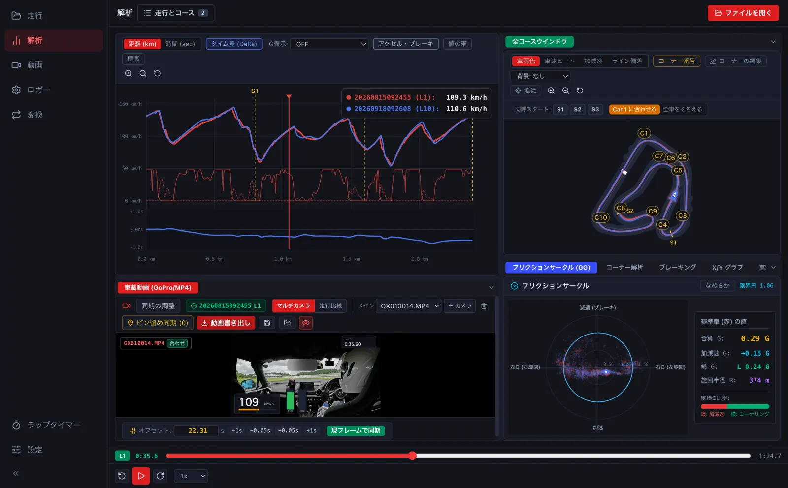

Macで走行ログを解析する：LapLoupe Track Analyzer
サーキットのGPSデータを解析するMac向けtrack analyzerを探している方へ。LapLoupeでは、ラップタイム・セクタータイム・走行ライン・車速・Gを見返し、別のラップと比較できます。ここでいうtrackは、モータースポーツのサーキット走行を指します。
ラップタイムだけでなく、どこで差がついたかを見る
最大4台・4ラップの車速を重ね、タイム差と走行ラインを比較できます。コーナーごとの進入・ボトム・脱出速度やブレーキングを見返し、コース図とグラフを同じ再生位置で確認できます。

手元のGPSログから始める
GPX・NMEA・VBO・対応するCSV・FIT・TCX・デジスパイスのログなどを読み込めます。形式ごとに読み込める値は異なります。データのないセンサー値を新たに取得する機能ではありません。
- Mac版のLapLoupe、またはパソコンのブラウザ版を開きます。
- 走行ログを選び、コースと計測線を確認します。
- 比較したいラップを割り当て、グラフと走行ラインを見ます。
- 車載動画があれば同期し、同じ場面を映像で見返します。
動画のメーター表示にも使う
速度・G・ラップタイム・コース図などの部品を選び、配置や色を変えられます。パソコンでは、メーター付きMP4や透明背景のメーター素材を書き出せます。
Mac・ブラウザ・iPhoneの使い分け
デスクトップ版はApple Silicon（M1以降）のMac向けです。パソコンのブラウザ版ならインストールせずにログを解析できます。iPhone / iPadアプリでは、端末のGPSを使ったラップ計測もできます。ログは端末内で処理し、解析のためにサーバーへアップロードしません。